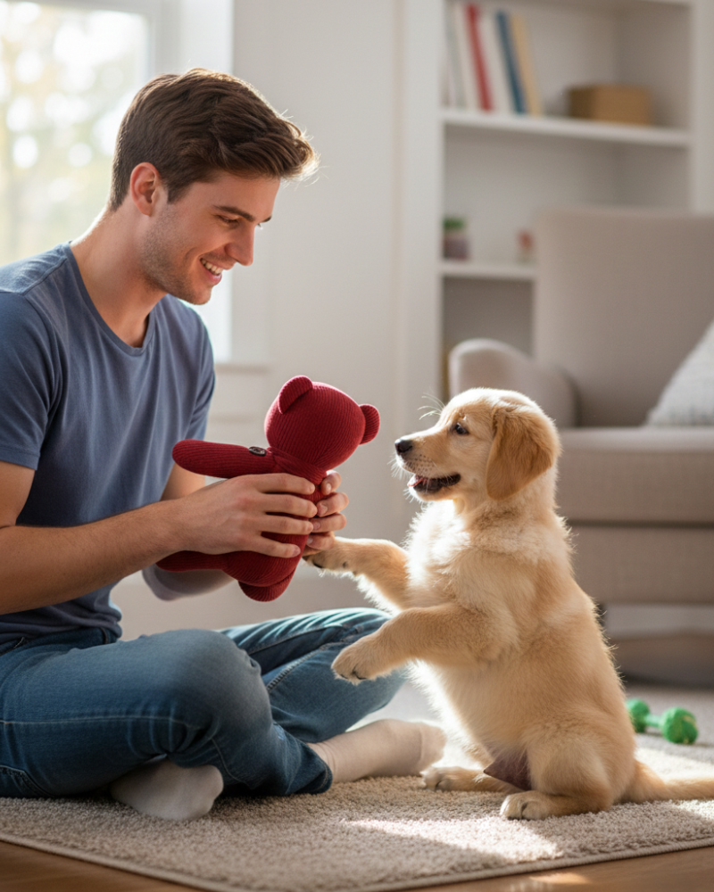

TextiHuella Pet: Innovación sostenible para el bienestar de tu mascota
¿Quiénes somos?
Un emprendimiento que transforma prendas en desuso en productos únicos para mascotas
En TextiHuella Pet combinamos sostenibilidad, personalización y valor emocional. Reutilizamos ropa que ya no usas para crear juguetes y mantas que fortalecen el vínculo con tu mascota, reduciendo al mismo tiempo el impacto ambiental.
Conocer más
Nuestra propuesta
Ofrecemos productos personalizados para mascotas elaborados con prendas del cliente, incorporando diseño artesanal, materiales seguros y un enfoque sostenible basado en economía circular.
- Productos personalizados
- Materiales reutilizados
- Valor emocional único